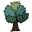
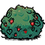
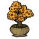

圆圆橘子树
岛上的果树资源之一，可产出圆圆橘子相关材料。
缩略图用于展示岛屿在地图上的整体轮廓；如果当前仍显示占位图，说明地图缩略图资源尚未放入 Wiki 图片目录。
万圆果树岛是花仙子模组新增的海上资源岛。岛屿整体接近圆形，外侧带有浅海与海岸过渡，主体区域覆盖夏莲地皮。岛中央保留一小片水域，并生成一棵成熟的巨大水中木，适合作为海上探索和采集目标。
岛上的果树资源之一，可产出圆圆橘子相关材料。

岛上的果树资源之一，可产出溜溜杨梅。

岛上常见的浆果类植物，提供草莓采集来源。

特殊植物，需要时间和雨水推进成长，成熟后可采集幻梦孢子。

岛上的辅助资源点，可与花和植物生态形成长期收益。

幻梦蘑菇成熟后的采集产物，是岛屿上的特殊资源。